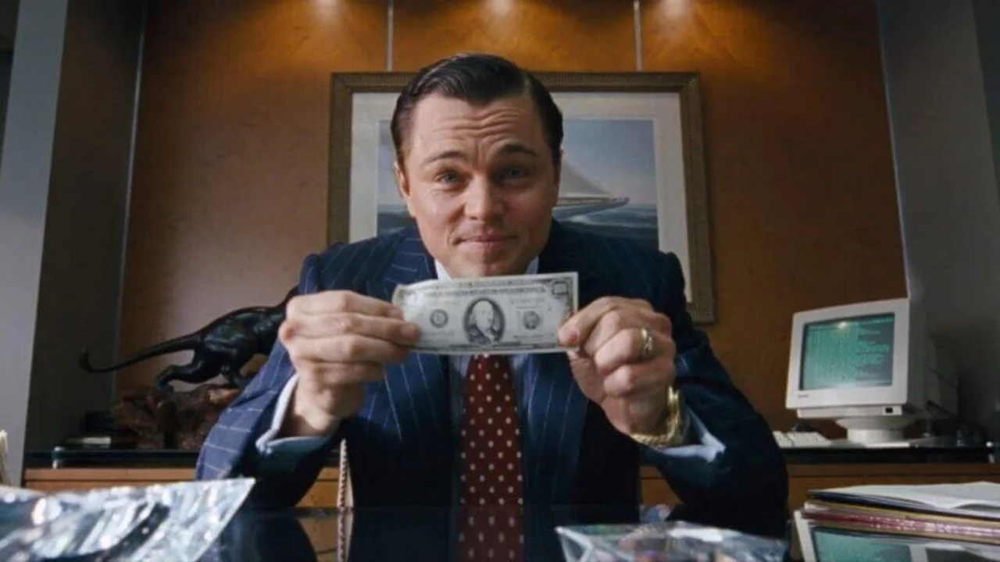

Брокеры
Брокер — юридическое лицо, выполняющее посреднические функции между продавцом и покупателем (на фондовой, товарной, валютной биржах), между страховщиком и страхователем (страховой брокер), между судовладельцем и фрахтователем. Брокер получает вознаграждение в виде комиссионных от суммы сделки либо в фиксированной сумме. Деятельность брокера основана на договоре поручения и договоре комиссии. Существует множество категорий брокеров, в частности, биржевой брокер, страховой брокер, фрахтовый брокер.
Брокерская деятельность на рынке ценных бумаг является лицензируемым видом деятельности. В Российской Федерации с 1 сентября 2013 года лицензия на осуществление брокерской деятельности выдаётся Центральным банком Российской Федерации. Ранее выдавалась Федеральной службой по финансовым рынкам (до 2004 года — Федеральной комиссией по рынку ценных бумаг).
Биржевой брокер
Биржевой брокер обязан иметь лицензию и быть зарегистрированным на бирже либо являться её членом. Брокер на рынке ценных бумаг — это торговый представитель, юридическое лицо, профессиональный участник рынка ценных бумаг, имеющий право совершать операции с ценными бумагами по поручению клиента и за его счёт или от своего имени и за счёт клиента на основании возмездных договоров с клиентом. Биржевой брокер может совершать сделки не напрямую, через специалистов по различным видам деятельности, а также через дилеров.

Клиент даёт брокеру поручение на совершение сделки, включающее такие параметры, как количество, срок поставки, цена. Брокер обязан предоставлять отчёт обо всех совершённых от имени клиента операциях. Чаще всего операции на биржах осуществляются через брокерские конторы. Для операций на бирже используются брокерские счета, где хранятся деньги, выделенные клиентом на покупку ценных бумаг, а также полученный доход. Брокер также может выдать клиенту брокерский кредит под обеспечение ценными бумагами.

Лучшие брокеры:
1) БКС Брокер
2) Открытие Брокер
3) Финам
4) Тинькофф Инвестиции
5) ИК «Фридом Финанс»
Что будет с акциями если брокер обанкротится?
Если ваш брокер исполняет закон, то ничего не пропадёт. Деньги он вернёт вам, а ценные бумаги переведёт другому брокеру по вашему выбору. Дело в том, что ваши акции хранятся не у брокера, а в депозитарии. Это отдельная компания, которая независимо следит за тем, кто и какими бумагами владеет.
Брокеры берут процент от суммы сделок за день, причем чем больше оборот, тем ниже процент. Но иногда брокер устанавливает фиксированную комиссию. Например, 0,5% от сделки но НЕ МЕНЕЕ 30 рублей. При этом комиссия взимается за день или месяц, в котором произошла сделка.